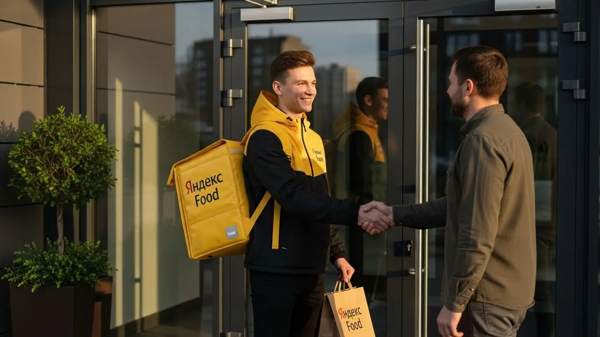
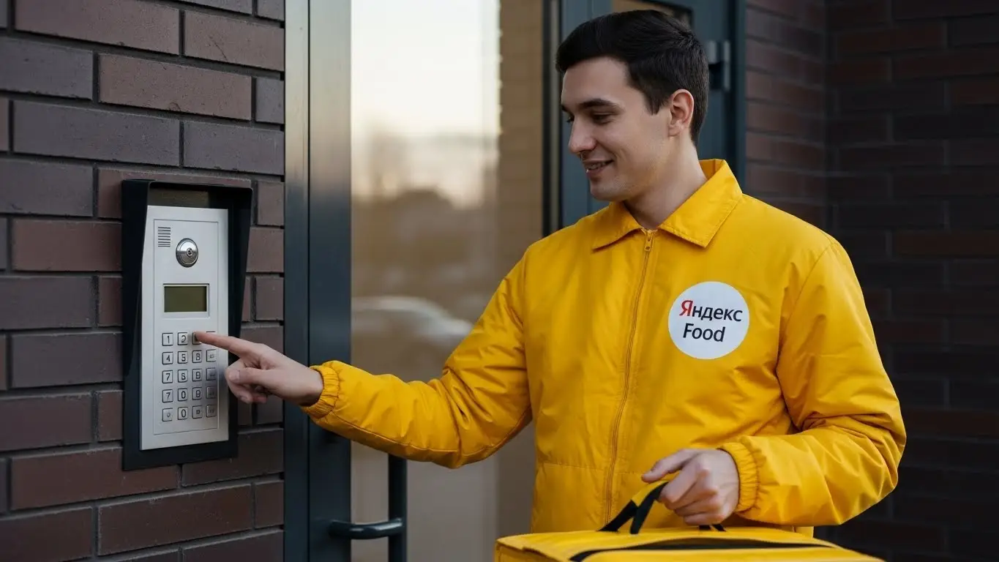
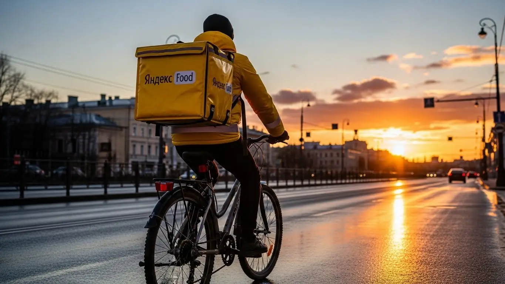

Работа курьером Яндекс Еды в Наро-Фоминске в 2025-2026: доход и условия
- Работа курьером Яндекс Еды в Наро-Фоминске: для кого эта вакансия и что вы получите
- Сколько вы будете зарабатывать курьером в Наро-Фоминске: калькулятор дохода и разбор выплат
- Реальный заработок курьера в Наро-Фоминске: смены и месячный доход
- График работы и форматы занятости
- Требования к кандидату и документы
- Самозанятость, налоги и юридическая чистота
- Пошаговое оформление и первый выход на линию в Наро-Фоминске
- Пешком, на вело или на авто: что выгоднее в Наро-Фоминске
- Районы, маршруты и «топовые» зоны заказов в Наро-Фоминске
- Безопасность, страховка, штрафы и оплата простоя
- Плюсы и возможные минусы работы курьером в Наро-Фоминске
- Реальные истории и отзывы курьеров из Наро-Фоминска
- Ответы на главные вопросы о работе курьером Яндекс Еды в Наро-Фоминске
- Короткие ответы на главные вопросы
- Заключение: твой следующий шаг в Наро-Фоминске
Все города
Здорово, будущий коллега! Раздумываешь, стоит ли крутить педали или баранку за Яндекс Еду в нашей Наре? И первый вопрос в голове не «как устроиться», а «сколько реально капает на карту»? Правильно мыслишь. Всех волнует, не убьёшь ли ты свой велик или машину за пару месяцев, не сольёшь ли весь доход на бензин и штрафы, стоя в пробках на Куйбышева, и стоит ли вообще игра свеч. Забудь про рекламные обещания о «золотых горах». Это не общая статья, а честный разбор полётов по работе курьером Яндекс Еды в Наро-Фоминске, от человека, который знает каждый здешний переулок.
Понять «внутрянку» этой работы именно в Наро-Фоминске — это 90% успеха. Чтобы через месяц не проклинать всё на свете, нужно сразу считать не только доходы, но и расходы на транспорт, налог самозанятого и понимать, как работает система приоритета. Чтобы узнать ключевые требования, рассчитать примерный доход и подать заявку, можно изучить страницу про работу курьером Яндекс Еда в Наро-фоминске, где есть все детали. Одно дело — летать по центру от ресторана к ресторану, и совсем другое — тащиться с заказом в частный сектор Малых Горок. Большинство новичков в Наро-Фоминске наступают на одни и те же грабли: катаются впустую в «мёртвые» часы или убивают время в районах, где заказов кот наплакал, теряя деньги.
В этом гиде мы честно разберём всё до винтика. Посчитаем, сколько чистыми остаётся в кармане у пешего, вело- и автокурьера в Наро-Фоминске с учётом местных реалий. Я покажу на карте «рыбные» места и «гиблые» районы, где лучше не ждать заказов. Расскажу, как погода и сезоны влияют на заработок, за что реально штрафуют и как этого избежать. Сравним, есть ли жизнь кроме Яндекса, и что предлагают другие сервисы в нашем городе. Никакой воды — только цифры, факты и личный опыт.
Меня зовут Алексей. Я сам не один год откатал по Наро-Фоминску с жёлтым коробом, а сейчас у меня свой небольшой таксопарк-партнёр. Так что я знаю эту кухню с обеих сторон — и как курьер, и как партнёр, который видит всю статистику. Хватит болтовни, давай к делу. Сейчас всё разложу по полочкам, без розовых очков и рекламной шелухи.
Чтобы ты сразу сориентировался, вот короткий гид по ключевым темам статьи.
Что ты точно узнаешь из этого разбора
В этой статье ты ТОЧНО узнаешь:
- Сколько реально можно заработать в Наро-фоминске за смену пешком, на велосипеде и на авто?
- В каких районах и у каких ТРЦ больше всего заказов и выше коэффициенты?
- Как правильно выбирать слоты и работать в пиковые часы, чтобы не кататься впустую?
- За что на самом деле снижают рейтинг и как работает оплата простоя, если заказов нет?
- Какие документы нужны и как быстро можно выйти на первую смену после заполнения анкеты?
А если тебе некогда читать всю статью — переходи сразу к заключению, где ты найдёшь короткие ответы на все эти вопросы и указания, в каких разделах искать подробности.
А для начала — наглядная инфографика с основными цифрами по работе в Наро-Фоминске.
Работа в Яндекс Еде: Наро-Фоминск в цифрах
Доход в час
350–500 ₽
В часы пик с бонусами и повышенными коэффициентами
Заработок за смену
2 800–3 800 ₽
Средний доход за 8-часовой слот в активный день
Чаевые от клиентов
+5–15%
Дополнительно к доходу, полностью остаются у вас
Форматы работы
Пеший / Вело / Авто
Выбор влияет на скорость, радиус и тип заказов
Работа курьером Яндекс Еды в Наро-Фоминске: для кого эта вакансия и что вы получите
Кому подойдёт эта работа в Наро-Фоминске
Давай начистоту: эта вакансия не для всех, но для многих она — настоящая находка. В первую очередь, это отличный вариант для студентов. Свободный график можно подстроить под лекции, а благодаря ежедневным выплатам деньги на жизнь, съёмную квартиру или развлечения будут всегда. Во-вторых, это идеальная подработка для тех, у кого уже есть основная занятость. Можешь выходить на пару часов вечером после офиса или развозить заказы в выходные, чтобы закрыть кредит или накопить на отпуск.
Также сюда приходят люди вообще без опыта. Одно из главных условий — от тебя не потребуют диплом или трудовую книжку. Главное — желание работать и наличие смартфона. Для водителей, у которых машина простаивает, это способ превратить её в актив: заказов для курьеров на автомобиле всегда хватает, особенно на дальние расстояния. Ну и, конечно, это работа для всех, кому важна свобода: сам себе начальник, сам решаешь, когда и сколько работать. Если тебе нужны быстрые деньги и ты не любишь сидеть на месте, это твой вариант.

Главные преимущества для жителей районов Южный, Мальково, Кантемировский
Главный плюс работы курьером в Наро-Фоминске — возможность выполнять заказы прямо у своего дома. Тебе не нужно тратить час-полтора на дорогу до «офиса». Живёшь, к примеру, в микрорайоне Южный — включаешь приложение «Яндекс Про» и начинаешь брать заказы из ближайших кафе и магазинов. То же самое касается и жителей Мальково или Кантемировского микрорайона. В этих районах много жилых домов, а значит, всегда есть спрос на доставку из Яндекс Еды и Яндекс Доставки.
Это экономит не только время, но и деньги на проезд. Ты работаешь в знакомой обстановке, знаешь все дворы и короткие пути. Система сама будет предлагать тебе заказы с минимальным пробегом до клиента, чтобы ты мог выполнить их быстрее и взять следующий. По сути, твой район становится твоим рабочим пространством, где ты отлично ориентируешься и можешь зарабатывать, не уезжая далеко от дома.
Краткое обещание по доходу и условиям
Если говорить о деньгах, то в Наро-Фоминске при активной работе можно рассчитывать на доход от 2500 до 4000 рублей за смену. Конечно, всё зависит от тебя: сколько часов ты на линии, какой способ передвижения выбрал и насколько велик спрос. Если рассматривать это как подработку на несколько часов в день, выйдет 25 000–35 000 рублей в месяц. При полной занятости, работая 5-6 дней в неделю, вполне реально зарабатывать 70 000–90 000 рублей и даже больше, особенно если ты курьер на своем авто.
Ключевые условия просты и прозрачны. Во-первых, свободный график — ты сам выбираешь слоты для работы в приложении. Во-вторых, ежедневные выплаты: заработал сегодня — получил деньги на карту уже сегодня или на следующий день. В-третьих, начать можно без опыта, а для оформления достаточно статуса самозанятого, который делается онлайн за 15 минут. Никаких сложных собеседований и долгого ожидания.
Вот тебе пример из жизни. Парень, Дима, 23 года, живёт в Наро-Фоминске. Начинал как пеший курьер, подрабатывал после учёбы. Бегал по центру с термосумкой, в районе улицы Ленина, брал заказы из местных ресторанов. За 3-4 часа в день выходило 1200–1500 рублей. Потом пересел на велосипед, стал охватывать Южный и Мальково. Скорость выросла, заказов стало больше, доход поднялся до 2500 рублей за 5-6 часов. Сейчас он закончил учёбу, купил недорогую машину и работает автокурьером на полную ставку. В хороший день с бонусами и чаевыми его заработок доходит до 5000 рублей. Он сам планирует свои выходные и не зависит от начальника.
В общем, работа курьером в Яндекс Еде — это гибкий инструмент для заработка. Она подходит и как временная подработка, и как полноценный источник дохода. Главное — понять, как всё устроено, и не лениться. Мой совет: начни с малого, выбери свой район и поработай в разное время, чтобы понять, когда спрос выше.
Сколько вы будете зарабатывать курьером в Наро-Фоминске: калькулятор дохода и разбор выплат
Из чего складывается доход курьера
Твой итоговый заработок — это не просто фиксированная ставка. Он складывается из нескольких частей, и важно понимать каждую из них. Во-первых, это базовая оплата за выполнение заказа, которая включает подачу в ресторан или магазин и доставку до клиента. Во-вторых, идёт доплата за расстояние. Чем дальше везти заказ, тем больше денег ты получишь. Система рассчитывает оптимальный маршрут, и каждый километр этого пути оплачивается.
Кроме того, есть повышающие коэффициенты. В часы пик (обед, вечер), в плохую погоду (дождь, снег) или в зонах с высоким спросом на карте в приложении «Яндекс Про» появляются «фиолетовые» или «красные» зоны. Заказы из этих зон оплачиваются дороже — в 1.5, 2, а то и в 3 раза. Существуют и персональные бонусы за выполнение определённого количества заказов. Не стоит забывать про чаевые — они полностью твои и приходят прямо на карту. И важное преимущество: сервис платит за простой, если ты приехал в ресторан, а заказ ещё не готов, а также может компенсировать стоимость проезда на общественном транспорте, если заказ очень дальний.
Как пользоваться калькулятором дохода
Чтобы прикинуть свой потенциальный заработок, на сайте есть специальный калькулятор. Пользоваться им просто. Сначала ты выбираешь свой город — Наро-Фоминск. Затем указываешь тип доставки: пеший курьер, велокурьер или курьер на авто. От этого выбора зависит средняя скорость и количество заказов, которые ты сможешь выполнить.
Далее ты выставляешь ползунками, сколько часов в день и сколько дней в неделю планируешь работать. Например, 4 часа в день 5 дней в неделю, если это подработка, или 8-10 часов 6 дней в неделю для полной занятости. На основе этих данных и средней статистики по городу калькулятор покажет тебе примерный диапазон твоего дохода за день и за месяц. Это не стопроцентная гарантия, но очень хороший ориентир, чтобы понять, на какие цифры можно рассчитывать.
Калькулятор дохода курьера в Наро-Фоминске
8 часов
5 дней
Примерный доход в месяц:
64 000 ₽
Это примерный расчёт на основе средней ставки по городу. Реальный доход зависит от спроса, бонусов, чаевых и вашего способа передвижения.
Чтобы увидеть актуальные условия, требования и сразу подать заявку, загляни на страницу про работу курьером Яндекс Еда в твоём городе — там же есть подробный FAQ и форма для анкеты.
Примеры расчёта для пешего, вело- и авто‑курьера в Наро-Фоминске
Давай разберём на конкретных примерах, сколько можно заработать в Наро-Фоминске.
- Пеший курьер в центре. Допустим, ты студент и работаешь пешком по 4 часа в день после учёбы, в основном в центре города. За час ты успеваешь сделать 2-3 коротких заказа. Средний чек за заказ с учётом небольшого расстояния — 150-180 рублей. За 4 часа выходит примерно 1200-1400 рублей. Если работать 5 дней в неделю, месячный доход составит около 24 000–28 000 рублей.
- Велокурьер между спальными районами. Ты работаешь на велосипеде по 6-7 часов в день, охватывая микрорайоны Южный и Кантемировский. Скорость выше, ты можешь брать заказы на 2-3 км. За час выходит 3-4 заказа. С учётом доплаты за расстояние средний заработок за заказ — 200-220 рублей. За смену получается 2500–3000 рублей. При графике 5/2 твой месячный доход будет в районе 50 000–60 000 рублей.
- Водитель-курьер по всему городу и пригороду. Ты работаешь на своей машине полный день, 8-10 часов. Берёшь заказы по всему Наро-Фоминску, а также в ближайшие населённые пункты. Ты можешь выполнять крупные и дальние заказы, которые оплачиваются выше (350-500 рублей). В час выходит 3-4 заказа. В день твой заработок может достигать 4000–5000 рублей, особенно если ловить пиковые часы с высокими коэффициентами. За месяц можно выйти на доход в 85 000–100 000 рублей до вычета расходов на бензин и налога для самозанятых.
Как-то раз у меня в парке водитель-курьер за одну субботу в Наро-Фоминске сделал 4800 рублей. День был дождливый, коэффициенты горели почти везде. Он начал в 11 утра, поработал в обеденный пик, потом сделал перерыв на пару часов и снова вышел на линию с 6 вечера до 11 ночи. Он брал и короткие заказы по центру, и несколько раз съездил на дальние доставки. Плюс ему оставили около 400 рублей чаевых. Это показывает, как погода и правильный выбор времени могут сильно повлиять на итоговую сумму.
Итак, твой доход напрямую зависит от способа передвижения и времени, которое ты готов уделять работе. Не ленись изучать карту спроса в приложении и выходить на линию, когда заказов больше всего. Мой совет: если ты на авто, не брезгуй короткими заказами в зонах с высоким коэффициентом — иногда выгоднее сделать три коротких дорогих заказа, чем один длинный и дешёвый.
Реальный заработок курьера в Наро-Фоминске: смены и месячный доход
А теперь давай к конкретным цифрам, которые можно ожидать в Наро-Фоминске. Реклама обещает золотые горы, но я расскажу, как обстоят дела на самом деле. Заработок курьера в сервисах Яндекса — это не фиксированная зарплата, а результат твоей работы, умноженный на знание города и смекалку. Доход может сильно отличаться в зависимости от того, как ты подходишь к делу: как к лёгкой подработке или как к основной работе.
Диапазон дохода для подработки и полной занятости
Если ты ищешь подработку на пару-тройку часов в день, чтобы закрыть какие-то мелкие расходы, цифры будут одни. Если же готов впахивать полную смену, то и доход будет совершенно другим. Важно понимать, что в Наро-Фоминске, как и везде, твой транспорт — это твой главный инструмент.
- Пеший курьер: Идеально для подработки в центре, например, в районе улиц Ленина и Маршала Жукова, где много кафе. За 3–4 часа в день можно делать 800–1500 рублей. При полной занятости (8–10 часов) выйдет 2000–2800 рублей за смену. В месяц на подработке это 15 000–25 000 рублей, на полной занятости — 45 000–60 000 рублей. Но учти, пешком много не унесёшь, даже с фирменным термокоробом, и ноги быстро устают.
- Велокурьер: На велосипеде ты мобильнее, поэтому и заработок выше. За 3–4 часа можно заработать 1200–2000 рублей, особенно если кататься между центром и спальными районами вроде Южного или Мальково. Полный день принесёт 2500–4000 рублей. Итог за месяц: 25 000–40 000 рублей на подработке и 60 000–85 000 рублей при полной занятости.
- Автокурьер: Машина даёт максимум возможностей. Работая курьером на своем авто, ты можешь брать дорогие заказы на большие расстояния, возить крупные покупки из магазинов и работать в любую погоду. За 3–4 часа в пиковое время можно легко сделать 2000–3500 рублей. Полный день — это 4000–7000 рублей. В месяц на подработке выходит 40 000–60 000 рублей, а при полной занятости можно зарабатывать и 90 000–120 000 рублей. Но не забывай вычитать расходы на бензин и обслуживание машины.

Как район, время суток и погода влияют на доход
Твой заработок — величина непостоянная. Он зависит от трёх ключевых факторов: где, когда и в какую погоду ты работаешь. Если понять эту механику, можно зарабатывать на 20–30% больше, не работая дольше.
Главное правило — будь там, где есть заказы. В Наро-Фоминске это, в первую очередь, центр города: район ТРЦ «Серпантин», улицы с ресторанами, откуда идут заказы Яндекс Еды. В обеденное время (с 12:00 до 15:00) и вечером (с 18:00 до 21:00) здесь всегда горит «фиолетовая зона» — это значит, действуют повышающие коэффициенты к стоимости доставки. В выходные спрос высокий почти весь день. Работать в тихом частном секторе в понедельник утром — гиблое дело.
Погода — твой лучший друг и враг одновременно. Как только начинается дождь, снегопад или сильный мороз, большинство курьеров предпочитают сидеть дома. А вот количество заказов, наоборот, резко растёт — люди не хотят выходить на улицу. В такие моменты коэффициенты и бонусы взлетают до небес, и за один заказ можно получить как за три в обычный день. Плюс, клиенты в плохую погоду чаще оставляют щедрые чаевые из благодарности.
Советы по увеличению заработка от опытных курьеров
Чтобы не просто работать, а именно зарабатывать, нужно подходить к делу с умом. Вот несколько проверенных советов, которые помогут увеличить доход без лишних переработок.
Во-первых, планируй своё время. Не выходи на линию хаотично. Лучше всего брать плановые слоты в приложении на пиковые часы: вечер буднего дня, обед и вечер выходных. Так у тебя будет гарантия минимального дохода, даже если заказов вдруг окажется мало.
Во-вторых, изучи карту спроса в «Яндекс Про». Не гоняйся за одним заказом через весь город в зону с высоким коэффициентом. Часто выгоднее оставаться в чуть менее «горячей», но стабильно загруженной зоне, где заказы идут один за другим. Для Наро-Фоминска это центральная часть и крупные жилые микрорайоны, такие как Кантемировский.
В-третьих, используй свой транспорт по максимуму. Если у тебя машина, не бойся брать заказы в пригород — в Атепцево, Каменское. Они обычно хорошо оплачиваются. На велосипеде идеально работать в радиусе 3–5 км от центра, где можно быстро объезжать пробки. Пешему курьеру лучше всего «окопаться» в радиусе 1-2 км от скопления ресторанов и не уходить далеко.
У меня был парень в парке, который на своей старенькой «девятке» поначалу пытался работать как таксист — мотался по всему городу. Зарабатывал средне, много жёг бензина. Я ему посоветовал сменить тактику: брать только вечерние слоты с 18:00 до 23:00 и работать исключительно на доставке еды и продуктов в спальные районы — это основной тип заказов в Яндекс Еде в это время. Через месяц его чистый доход вырос почти в полтора раза, потому что он перестал жечь топливо впустую и работал только в самые прибыльные часы.
В общем, твой заработок курьером в Наро-Фоминске напрямую зависит от твоей стратегии. Не ленись анализировать, где и когда больше заказов, и не бойся плохой погоды — именно она приносит самые большие деньги. Новичкам советую начинать с плановых слотов в центре, чтобы набить руку и понять ритм города.
График работы и форматы занятости
Одно из главных преимуществ работы курьером — свободный график. Ты сам себе начальник и сам решаешь, когда работать, а когда отдыхать. Это не просто красивые слова, а реальный инструмент, который позволяет встроить доставку в любую жизнь: будь ты студент, работник на пятидневке или человек, который ищет основной источник дохода.
Подработка после учёбы или основной работы
Совмещать доставку с другой деятельностью проще простого. Главное — правильно рассчитать свои силы и выбрать удобный формат. Вот пара реальных примеров, как это делают ребята в Наро-Фоминске.
Пример первый: студент местного техникума. Учится до 15:00, потом обедает, делает дела и к 18:00 выходит на линию на велосипеде. Катается 3-4 часа по вечерам в будни, когда в Яндекс Еде самый пик заказов. В выходные может взять смену на 5-6 часов днём. В итоге, не напрягаясь, он делает себе 25 000–30 000 рублей в месяц. Этого с лихвой хватает на личные расходы и развлечения, при этом учёба не страдает.
Пример второй: мужчина, работает в офисе с 9 до 18. У него есть машина. Он выходит на линию в пятницу вечером после работы и катается до поздней ночи. В субботу тоже берёт вечернюю смену. В воскресенье отдыхает с семьёй. Такая подработка курьером приносит ему дополнительные 20 000–25 000 рублей в месяц, которые он откладывает на отпуск или крупные покупки. Он не убивается, работает в удовольствие и получает неплохую прибавку к основной зарплате.

Полная занятость: как выглядит типичный день курьера
Если ты рассматриваешь доставку как основную работу, твой день будет строиться вокруг пиков спроса. Вот как выглядит типичный день курьера на авто, который работает на полную ставку в Наро-Фоминске.
Он выходит на линию около 10 утра. Утренние часы обычно спокойные, это время для заказов из Яндекс Лавки, магазинов и доставки небольших посылок. С 12:00 до 15:00 начинается обеденный пик — он перемещается в центр, где много заказов из кафе и ресторанов через Яндекс Еду. После 15:00 наступает затишье, можно сделать перерыв, пообедать, заехать по своим делам.
К 18:00 он снова на линии и готов к вечернему наплыву. Это самое прибыльное время, которое длится до 21:00–22:00. Заказы идут один за другим, в основном в спальные районы — Южный, Мальково. После 22:00 спрос падает, можно выполнить ещё пару заказов и отправляться домой. За такой день, работая с перерывами, можно заработать 5000–6000 рублей.
Как планировать слоты и выходы через приложение «Яндекс Про»
Приложение «Яндекс Про» — твой главный рабочий инструмент. Через него ты получаешь заказы, видишь свой доход и планируешь график. Есть два основных режима работы: свободные выходы и плановые слоты.
Свободный выход — это максимальная гибкость. Ты можешь нажать кнопку «На линии» в любой момент, когда захочешь поработать, и так же в любой момент закончить. Это удобно, но нет никаких гарантий по доходу.
Плановые слоты — это когда ты заранее бронируешь время и район, в котором будешь работать. Например, с 18:00 до 22:00 в центральном районе. Плюс таких слотов в том, что часто на них действует гарантированный минимальный доход. Даже если заказов будет мало, сервис доплатит тебе до определённой суммы. Но здесь важна дисциплина: на слот нельзя опаздывать, иначе твой рейтинг активности снизится. А высокий рейтинг — это приоритет в распределении заказов. Поэтому всегда приезжай в выбранную зону за 5–10 минут до начала слота.
У меня был случай с новичком, который постоянно опаздывал на свои плановые слоты. В итоге его рейтинг активности упал, и заказы ему стали приходить реже. Он уже думал, что эта работа не для него. Мы с ним разобрались, он стал выезжать заранее, и за неделю его рейтинг восстановился, а вместе с ним и стабильный доход.
В итоге, свободный график в работе курьером — это реальность, но он требует самодисциплины. Чтобы зарабатывать стабильно, используй плановые слоты, особенно на первых порах. Это поможет тебе понять ритм работы, изучить районы и поддерживать высокий рейтинг, который напрямую влияет на твой доход.
Требования к кандидату и документы
Многих новичков пугают условия работы и возможная бумажная волокита, но на деле всё гораздо проще. Чтобы стать курьером, не нужно высшее образование или специальный опыт — начать можно с нуля. Главное — быть ответственным, пунктуальным и хорошо ориентироваться в городе. Давай по порядку разберём, какие требования к кандидатам.
Возраст, гражданство и базовые условия
Начнём с основ. Чтобы работать с Яндекс Едой как самозанятый партнёр, тебе должно быть полных 18 лет. Это строгое правило, связанное с юридической ответственностью и особенностями налогового режима. По гражданству тоже есть чёткие рамки: нужен паспорт гражданина РФ или одной из стран ЕАЭС (Беларусь, Казахстан, Армения, Кыргызстан).
Что касается физической формы, никто не требует олимпийских рекордов. В целом, если ты можешь без проблем подняться на пятый этаж без лифта с сумкой весом 5–7 кг, то с работой справишься.
Для пешего курьера важна готовность много ходить. Велокурьеру понадобится выносливость, особенно если в Наро-Фоминске придётся кататься по районам с перепадами высот. А водителю-курьеру, само собой, важнее всего уверенно водить машину.
Какие документы нужны для работы курьером
Чтобы устроиться на работу быстро и без лишних поездок, собери пакет документов заранее. Список короткий, ничего сверхъестественного в нём нет.
Вот что тебе понадобится:
- Паспорт. Основной документ, удостоверяющий личность. Нужен для заключения договора и регистрации в качестве самозанятого.
- ИНН (Идентификационный номер налогоплательщика). Он нужен для оформления самозанятости. Если ты не помнишь свой номер, его можно за пару минут бесплатно узнать на сайте налоговой службы (ФНС).
- Личная банковская карта. Подойдёт карта любого российского банка (МИР, Visa, Mastercard), оформленная на твоё имя. Именно на неё будут приходить ежедневные выплаты. Карта родственников или друзей не подойдёт.
- Медицинская книжка. Она обязательна для работы с заказами из ресторанов и кафе. Без неё тебе будут доступны только доставки из магазинов или посылки, а это сильно режет потенциальный доход и количество доступных заказов. Оформить её можно в любой поликлинике или частном медцентре в Наро-Фоминске — это небольшая инвестиция, которая быстро окупится.
Можно ли работать с 16 лет и какие есть альтернативы
Один из самых частых вопросов: со скольки лет можно работать в доставке? Отвечаем честно: стать самозанятым партнёром-курьером сервиса Яндекс Еда можно только с 18 лет. Это связано с полной материальной и юридической ответственностью, которую несовершеннолетний нести не может.
Если тебе ещё нет 18, но хочется найти подработку, не отчаивайся. Рассмотри другие варианты, доступные подросткам в Наро-Фоминске. Например, можно раздавать листовки, помогать в местных магазинах с выкладкой товара или поискать вакансии промоутера. Это тоже даст хороший опыт и первые карманные деньги, а как только исполнится 18 — добро пожаловать в доставку.
Недавно ко мне устраивался 19-летний студент. Переживал, что с документами будет целая история. Мы с ним сели и за 5 минут нашли его ИНН на сайте ФНС. Паспорт и карта у него были. Единственный затык — медкнижка. Я посоветовал ему частный центр на улице Ленина, где её делают за пару дней. В итоге через три дня он уже вышел на свою первую смену в районе Мальково и за 4 часа заработал свои первые 1500 рублей. Вся «бюрократия» заняла минимум времени.
Как видишь, список требований и документов для работы курьером вполне стандартный. Главные ограничения — возраст от 18 лет и гражданство РФ или ЕАЭС. Мой совет: если планируешь работать с едой, сделай медкнижку в первую очередь, чтобы не терять самые выгодные заказы.
Самозанятость, налоги и юридическая чистота
Многих пугает слово «самозанятость» и тема налогов, кажется, что это что-то сложное, связанное с отчётами. На самом деле, это самый простой и прозрачный способ работать на себя и получать официальный доход. Яндекс Еда, как и многие другие крупные сервисы, работает с курьерами именно в таком формате. Давай разберёмся, почему это удобно и безопасно.
Почему курьеры Яндекс Еды работают как самозанятые
Формат самозанятости (или налог на профессиональный доход, НПД) был специально придуман государством для тех, кто работает на себя. Для курьера это идеальный вариант по нескольким причинам.
Во-первых, это полностью легальная работа. Твой доход официальный, его можно подтвердить справкой для банка, если понадобится кредит. Во-вторых, это максимальная простота в оформлении и отчётности. Тебе не нужен бухгалтер, не нужно вести сложные отчётные книги и покупать кассовый аппарат. Все операции проводятся через одно приложение в смартфоне. В-третьих, это даёт тебе свободу. Ты не сотрудник в штате с жёстким графиком, а независимый партнёр, который сам решает, когда и сколько ему работать. Именно поэтому у тебя есть гибкий график и возможность получать ежедневные выплаты.
Как за 10 минут оформить самозанятость через «Мой налог»
Регистрация статуса самозанятого занимает от силы 10–15 минут и делается прямо с телефона. Никуда ходить не нужно.
Вот простая пошаговая схема:
- Скачай приложение. Найди в Google Play или App Store официальное приложение ФНС «Мой налог» и установи его.
- Начни регистрацию. Открой приложение и выбери самый простой способ — «Регистрация по паспорту РФ».
- Отсканируй паспорт. Наведи камеру телефона на главный разворот паспорта. Приложение само распознает все данные.
- Сделай селфи. Дальше приложение попросит тебя сфотографироваться. Это нужно для подтверждения личности, чтобы никто не смог зарегистрироваться по твоему паспорту.
- Подтверди регистрацию. Проверь данные, выбери свой регион (Московская область) и подтверди отправку заявления. Через несколько минут придёт уведомление, что ты официально зарегистрирован как плательщик НПД.
Вот и всё. После этого ты можешь привязывать свой статус к приложению «Яндекс Про» и начинать работать.
Сколько и как платить налоги
Это самый приятный момент. Налоговая ставка для самозанятых (НПД) — одна из самых низких. Когда ты получаешь доход от юридического лица, как Яндекс Еда, налог составляет всего 6%. Никаких других скрытых сборов или отчислений нет.
Процесс уплаты налога тоже автоматизирован до предела. Тебе не нужно ничего считать самому. Яндекс передаёт данные о твоих выплатах в налоговую. В приложении «Мой налог» до 12 числа каждого месяца формируется квитанция с суммой налога за предыдущий месяц. Тебе остаётся только зайти в приложение и нажать кнопку «Оплатить». Это можно сделать любой банковской картой. Оплатить нужно до 28 числа. Это в разы проще и безопаснее, чем работать неофициально и постоянно переживать из-за «серого» кэша.
Один из моих водителей долгое время работал в такси «вчёрную», боялся налогов как огня. Когда он решил перейти в доставку, я лично показал ему, как работает самозанятость. Он был в шоке, что вся регистрация заняла меньше времени, чем перекур. А когда пришёл первый налог — около 2500 рублей с дохода в 40 с лишним тысяч — он окончательно успокоился. Сказал, что это смешная цена за официальный статус и спокойствие.
Итак, самозанятость — это не страшно, а удобно и выгодно. Такое оформление — твой способ работать легально, платить минимальный налог и не зависеть от работодателя. Не бойся этого шага, он открывает доступ к стабильному и официальному доходу без лишней головной боли.
Пошаговое оформление и первый выход на линию в Наро-Фоминске
Многих новичков пугает процесс оформления, кажется, что это долго и сложно. На самом деле, система отлажена так, чтобы ты мог начать зарабатывать как можно быстрее, часто в тот же день. Такая работа курьером отлично подходит как для подработки, так и для основного источника дохода.
Весь процесс от анкеты до первого заказа занимает всего несколько часов, если подойти к делу собранно. Главное — не бояться и просто следовать инструкциям. Из практики: парень в нашем парке решил попробовать. Утром в 10:00 заполнил анкету, пока пил кофе. К обеду уже прошёл обучение и тесты. Днём заехал к партнёру, забрал сумку, и в 17:00 уже вышел на свой первый двухчасовой слот в районе Мальково. К ужину у него на балансе было первых 750 рублей. Вот такая скорость.
Шаг 1–2: анкета и онлайн‑обучение
Всё начинается с простой анкеты на сайте. Никаких сложных вопросов там нет: ФИО, дата рождения, гражданство, номер телефона. Это стандартная процедура, чтобы система могла тебя идентифицировать. После заполнения твои данные уходят на быструю проверку, которая обычно занимает от 15 минут до часа.
Как только проверка пройдена, тебе открывается доступ к короткому онлайн-обучению. Это не нудные лекции, а наглядные ролики и инструкции о том, как пользоваться приложением «Яндекс Про», правильно общаться с клиентами и ресторанами, и что делать в нестандартных ситуациях. В конце — небольшой тест, чтобы убедиться, что ты понял основы. Проходишь его — и ты на шаг ближе к первому заработку.
Шаг 3: получение сумки и доступа к заказам в Наро-Фоминске
Следующий этап — получение главного инструмента, термосумки или термокороба. Без него система не даст тебе доступ к заказам из ресторанов и магазинов. В Наро-Фоминске, где нет крупного курьерского центра, есть несколько вариантов его получения. Чаще всего это происходит через одного из официальных партнёров сервиса, чей офис находится в городе.
Также возможен вариант с доставкой сумки на дом. Все доступные способы и точные адреса появятся у тебя в приложении «Яндекс Про» после успешного обучения. Как только ты получишь термокороб и активируешь его в приложении (обычно просто сфотографировав), тебе сразу откроется доступ к заказам.
Шаг 4: первый слот и первый доход
Вот и всё, ты готов к работе курьером. Открывай «Яндекс Про», переходи в раздел с расписанием и выбирай свой первый слот. Слот — это запланированный отрезок времени, когда ты будешь на линии. Для начала я советую выбрать короткий слот на 2–4 часа в том районе Наро-Фоминска, который ты знаешь как свои пять пальцев. Например, если живёшь в микрорайоне Южный, начинай оттуда.
Как только твой слот начнётся, нажимай кнопку «На линию», и приложение начнёт предлагать тебе заказы поблизости. Принимаешь первый, едешь в ресторан, забираешь пакет, отвозишь клиенту — и видишь, как на твой баланс падает первая сумма. Это доказывает, что всё реально и работает. Первые деньги можно заработать уже в день регистрации, а система ежедневных выплат позволяет сразу ими пользоваться.
Пешком, на вело или на авто: что выгоднее в Наро-Фоминске
Выбор транспорта — ключевой момент, который напрямую влияет на твой доход и комфорт. В Наро-Фоминске у каждого формата есть свои сильные стороны и «золотые» зоны. Не стоит сразу покупать машину или велосипед, если их нет. Начать можно без опыта и вложений, а дальше поймёшь, что для тебя выгоднее.
Например, один из моих водителей начинал как пеший курьер. Пару месяцев работал по центру после основной работы, понял механику, скопил немного денег и купил недорогой велосипед. Его доход вырос почти в полтора раза, потому что он стал успевать делать больше заказов между спальными районами. Через полгода он уже сел за руль и начал работать по всему городу и пригороду, сделав доставку своей основной работой.
Пеший курьер: для центра и плотной застройки в Наро-Фоминске
Если у тебя нет транспорта, пеший формат — идеальный старт. В центре Наро-Фоминска, особенно в районе площади Свободы, улиц Ленина и Маршала Жукова, очень высокая плотность заказов из Яндекс Еды. Здесь много кафе, пиццерий и магазинов, а расстояния до клиентов часто не превышают 1–2 километров. Пешком ты легко обойдёшь любые пробки и не будешь мучиться с парковкой.
Этот формат отлично подходит для подработки. Можно выйти на 3–4 часа в обеденный пик или вечером и спокойно заработать свою сумму, совмещая работу с прогулкой. Да, больших денег на дальних заказах не будет, но для стабильного дополнительного дохода в центре города — это отличный и не требующий вложений вариант.
Велокурьер: быстрые доставки между спальными районами
Велосипед — это золотая середина. Он даёт скорость и манёвренность, позволяя обслуживать более широкую территорию, чем пешком, но при этом не требует затрат на бензин. Для Наро-Фоминска это особенно актуально при работе в крупных спальных районах, таких как микрорайон Южный или Мальково. Здесь расстояния между домами и торговыми точками уже больше, и на велосипеде ты будешь гораздо эффективнее.
Велокурьеры, по моему опыту, зарабатывают на 30–50% больше пеших. Ты быстрее забираешь заказ, быстрее его отвозишь и быстрее получаешь следующий. Плюс, это отличный способ поддерживать себя в форме — по сути, тебе платят за фитнес. Если у тебя есть велосипед, даже самый простой, смело выбирай этот формат.
Водитель-курьер: заказы по всему городу и пригороду Атепцево, Селятино
Автомобиль открывает максимальные возможности для заработка. Водитель-курьер на своем авто не привязан к одному району и может выполнять самые дорогие заказы: доставка по всему городу, из одного конца в другой, а также в пригороды — Атепцево, Селятино, Калининец. На машине можно брать крупные и тяжёлые заказы из гипермаркетов и Яндекс Маркета, которые недоступны пешим и велокурьерам.
Особенно выгодно работать на авто в плохую погоду и в вечерние часы пик. В это время количество заказов резко возрастает, включаются повышенные коэффициенты, а число курьеров на линии уменьшается. Именно тогда водители снимают самые сливки. Да, есть расходы на бензин и амортизацию, но высокий доход их с лихвой перекрывает.
Сравнение форматов доставки в Наро-Фоминске
| Параметр | Пеший курьер | Велокурьер | Водитель-курьер |
|---|---|---|---|
| Потенциальный доход | Базовый | Средний | Высокий |
| Лучшие зоны | Центр (ул. Ленина, пл. Свободы) | Спальные районы (Южный, Мальково) | Весь город и пригороды (Атепцево, Селятино) |
| Расходы | Нет (только удобная обувь) | Минимальные (обслуживание велосипеда) | Существенные (бензин, амортизация, страховка) |
| Главный плюс | Простота и старт без вложений | Скорость и "оплачиваемый фитнес" | Максимальный заработок, комфорт в любую погоду |
Районы, маршруты и «топовые» зоны заказов в Наро-Фоминске
Чтобы работа курьером приносила хороший доход, а не просто сжигала время, нужно понимать, где и когда в Наро-Фоминске есть спрос. Город небольшой, но со своими «рыбными» местами. Главное правило — быть там, где люди голодны или хотят что-то купить: у торговых центров, на центральных улицах и в больших жилых массивах по вечерам.
Где больше всего заказов: ТРЦ, бизнес‑центры и туристические места
Самые выгодные заказы, как правило, концентрируются в нескольких ключевых точках. Во-первых, это крупные ТРЦ, такие как «Серпантин» на площади Свободы и «Воскресенский Пассаж» на улице Ленина. Здесь всегда есть работа, особенно в обеденный перерыв (с 12:00 до 15:00) и вечером после 18:00. В выходные спрос высокий почти весь день, так что это отличный вариант для подработки.
Во-вторых, это деловой центр города. Улицы Ленина и Калинина — это скопление банков, офисов, магазинов. Отсюда часто приходят заказы не только на еду, но и на доставку документов или небольших посылок. В-третьих, не стоит забывать про места отдыха. Летом это парк Воровского и набережная реки Нара — люди заказывают пиццу и напитки прямо туда. Понимая эти точки притяжения, ты можешь выстраивать свои маршруты так, чтобы всегда быть рядом с потенциальным заказом.
Работа в своём районе: примеры для популярных жилых кварталов
Многие думают, что для хорошего заработка нужно обязательно ехать в центр. Это не всегда так. В Наро-Фоминске можно отлично работать и в своём районе, экономя время и топливо. Например, для курьера на автомобиле или велосипеде микрорайон Южный или Мальково — отличный выбор. Здесь полно многоэтажек, а значит, и клиентов. Вечером и в выходные тут настоящий бум заказов из местных пиццерий, суши-баров и сетевых магазинов вроде «Пятёрочки» и «Магнита».
То же самое касается Привокзального района. Здесь всегда много людей, есть и жилые дома, и небольшие предприятия. Работая в своём районе, ты знаешь все дворы и короткие пути, что даёт тебе преимущество в скорости. Главное — изучить, какие заведения в твоём квартале пользуются популярностью, и стараться находиться неподалёку от них в пиковые часы.
Как выбирать зоны и слоты в «Яндекс Про», чтобы не мотаться впустую
Приложение «Яндекс Про» — твой главный инструмент для планирования. Основное, на что нужно смотреть, — это карта спроса. Зоны, подсвеченные фиолетовым и сиреневым цветом, означают, что заказов сейчас много, а к стоимости доставки применяется повышающий коэффициент. Чем ярче цвет — тем выше доплата. Старайся начинать смену именно в таких «горящих» зонах.
Планируй слоты заранее. Когда ты выбираешь плановый слот, у тебя есть гарантия минимального дохода, даже если заказов будет мало. Это твоя страховка. При выборе слота смотри не только на время, но и на район. Если ты на машине, можешь брать слоты в разных частях города. Если пешком или на велосипеде — выбирай компактные зоны с плотной застройкой, чтобы не наматывать лишние километры. И всегда старайся выстраивать маршрут так, чтобы после выполнения заказа оказаться не на отшибе, а в месте, где может появиться следующий.
Вот недавний пример из практики. Водитель-курьер на своем авто взял вечерний слот с 18:00 до 22:00. Он начал у ТРЦ «Серпантин», где был высокий коэффициент 1.5х, и за час выполнил три дорогих заказа с фудкорта. К 19:30 спрос в центре начал спадать, но на карте «загорелся» микрорайон Южный. Курьер сразу поехал туда и до конца смены развозил заказы из местной пиццерии по окрестным домам. В итоге за 4 часа он не простаивал, постоянно двигался по выгодным зонам, и его зарплата за смену составила около 2500 рублей.
В общем, ключ к хорошему доходу в Наро-Фоминске — это знание города и умение пользоваться картой спроса в приложении Яндекс Про. Не сиди на месте в ожидании заказа, а двигайся туда, где есть деньги. Мой совет: в первые недели пробуй работать в разных районах в разное время, чтобы нащупать свой личный «золотой» маршрут и понять лучшие условия для себя.
Безопасность, страховка, штрафы и оплата простоя
Работа курьером — это постоянное движение, а значит, всегда есть определённые риски. Важно понимать, что ты не остаёшься с ними один на один. Условия работы в Яндексе включают систему поддержки, страховку, чёткие правила и даже оплату времени, когда заказов нет. Но и от тебя требуется голова на плечах и соблюдение элементарных правил безопасности.
Это не просто слова. Я видел разные ситуации: и ДТП, и травмы на ровном месте, и конфликтных клиентов. В большинстве случаев, если курьер действует по инструкции и не паникует, всё решается быстро и без серьёзных последствий для его кошелька и здоровья. Давай разберёмся по порядку, как всё устроено.
Бесплатная страховка на сменах и что она покрывает
Самое главное, что нужно знать: как только ты выходишь на линию в приложении, твоя жизнь и здоровье автоматически страхуются. Это бесплатно для тебя, все расходы берёт на себя сервис. Страховка действует всё время, пока ты выполняешь заказы, и покрывает несчастные случаи. Сумма покрытия — до 2 миллионов рублей.
Что это значит на практике? Если ты, например, велокурьер и упал, сломав руку, страховка покроет расходы на лечение. Если ты водитель-курьер и попал в ДТП (и ты не виновник), получив травму, — то же самое. Страховой случай — это любое внезапное событие на смене, которое привело к проблемам со здоровьем.
Чтобы получить компенсацию, нужно сразу же сообщить о случившемся в поддержку через «Яндекс Про» и предоставить медицинские документы. Это реальная защита, которая помогает не остаться без денег в сложной ситуации.
Правила безопасности на дороге и при доставке
Страховка — это хорошо, но лучше до неё не доводить. Поэтому соблюдение правил безопасности — твоя прямая обязанность. Для пеших курьеров главное — смотреть по сторонам, переходить дорогу только по переходу и носить вечером одежду со светоотражающими элементами. Фирменный термокороб Яндекса как раз такой, и это не для красоты.
Велокурьерам я настоятельно рекомендую всегда ездить в шлеме и использовать фонари в тёмное время суток. Помни, ты — полноценный участник дорожного движения. Для водителей-курьеров правила стандартные: не гоняй, соблюдай ПДД, не отвлекайся на телефон за рулём. Приложение «Яндекс Про» строит маршрут, но слепо доверять навигатору, игнорируя знаки, нельзя.
Кроме того, будь аккуратен с самим заказом: надёжно закрепляй напитки, не ставь пиццу на бок. И если доставляешь заказ за наличные, всегда проверяй купюры и имей при себе сдачу.
Какие бывают штрафы и как их избежать
Да, в сервисе есть система санкций, но это не штрафы в привычном понимании, а снижение приоритета и рейтинга. Это не способ отобрать у тебя деньги, а механизм контроля качества. Такие меры применяются за серьёзные нарушения, которые портят репутацию сервиса и вредят клиентам. Например, за регулярные сильные опоздания, порчу заказа из-за неаккуратной доставки или грубость в общении с клиентом или сотрудником ресторана.
Избежать этого просто. Во-первых, будь вежлив. Простое «здравствуйте» и «хорошего дня» творят чудеса. Во-вторых, если понимаешь, что опаздываешь (пробка, долгий поиск адреса), не молчи — в приложении есть кнопка для связи с клиентом или поддержкой. Предупреди, что задерживаешься. В-третьих, всегда проверяй комплектность заказа в ресторане. Если чего-то не хватает, решай вопрос на месте. Простые правила, которые сохранят твой рейтинг и доход.
Что такое оплата простоя и как она защищает ваш доход
Это одна из ключевых фишек, которая выгодно отличает Яндекс Еду от многих других сервисов. Оплата простоя — это твоя финансовая подушка безопасности, которая гарантирует доход. Она работает, когда ты выходишь на плановый слот, находишься в нужной зоне и готов принимать заказы, но их по какой-то причине нет. В этом случае сервис начисляет тебе минимальную плату за час.
Например, ты выбрал слот с 14:00 до 17:00 в центре Наро-Фоминска. Приехал на место, включил приложение, но за первый час тебе не пришло ни одного заказа. Ты не потеряешь это время впустую — тебе будет начислена минимальная ставка за этот час. Это защищает твой заработок от ситуаций, когда спрос временно падает.
У меня был случай с новичком, который вышел на смену в понедельник днём, когда заказов было мало, и уже начал нервничать. Но я ему объяснил про оплату простоя. В итоге за 3 часа у него было всего два заказа, но остальное время ему компенсировали по минимальной ставке. Его доход был не таким высоким, как в пятницу вечером, но он не остался с нулём.
В итоге, твоя безопасность и стабильность дохода зависят от двух вещей: твоей собственной аккуратности и знания правил и инструментов, которые даёт сервис. Не пренебрегай ни тем, ни другим. Мой совет: в любой непонятной ситуации — будь то ДТП, конфликт или просто вопрос по заказу — сразу пиши в службу поддержки. Они для того и существуют, чтобы помогать тебе решать проблемы.
Плюсы и возможные минусы работы курьером в Наро-Фоминске
Любая работа, если по-честному, это не только зарплата, но и свои особенности. Доставка — не исключение. У этой вакансии есть как жирные плюсы, ради которых люди приходят и остаются, так и моменты, к которым нужно быть готовым. Давай без прикрас разберём, что тебя ждёт на улицах Наро-Фоминска.
Сильные стороны работы курьером в Наро-Фоминске
Главное, за что ценят эту работу — свобода. Ты сам себе начальник и сам строишь свой день. Никто не стоит над душой с 9 до 6. Захотел — вышел на пару часов вечером, нужны деньги — отработал полный день. Для студентов или тех, у кого есть основная работа, это идеальная подработка.
Второй важный момент — деньги приходят сразу. Отработал смену — получил выплату на карту. Не нужно ждать конца месяца, чтобы закрыть срочный платёж или просто купить себе что-то. Такая система с ежедневными выплатами очень дисциплинирует и даёт чёткое понимание, сколько ты заработал. Плюс, всё официально через самозанятость. Это твой легальный доход, с которого платится небольшой налог, и никаких проблем с отчётностью — всё делается в пару кликов.
И, конечно, работа в своём городе. Тебе не нужно мотаться в Москву, тратить время и деньги на дорогу. Можно выбрать для доставок свой район, например, Южный или Мальково, где знаешь каждый двор. А если что-то пойдёт не так на заказе, у тебя всегда есть поддержка сервиса Яндекс и бесплатная страховка на время смены. Это даёт уверенность, что ты не останешься один на один с проблемой.
С какими сложностями чаще всего сталкиваются курьеры
Буду откровенен, работа на ногах — это физическая нагрузка. Если ты пеший курьер или на велосипеде, будь готов к тому, что в конце дня будешь чувствовать усталость. Особенно поначалу. Мой совет — не рви с места в карьер, начни с коротких смен по 3–4 часа, чтобы втянуться. Со временем это превращается в оплачиваемый фитнес.
Вторая реальность — погода. В Наро-Фоминске, как и везде, бывают и дожди, и снегопады, и жара. Работать в таких условиях не всегда комфортно. Но тут есть и обратная сторона: в плохую погоду заказов всегда больше, включаются повышающие коэффициенты, и клиенты чаще оставляют хорошие чаевые. Главное — правильно одеться. Хорошая непромокаемая куртка и удобная обувь решают 90% проблем.
Иногда бывают простои, когда заказов мало. Такое случается, но редко, обычно в середине буднего дня. Чтобы не терять время, можно переместиться в зону с более высоким спросом — на карте в приложении «Яндекс Про» такие места подсвечиваются. К тому же, сервис частично компенсирует время ожидания, если ты на плановом слоте, так что совсем впустую стоять не будешь.
Ну и клиенты бывают разные. Большинство — адекватные люди, но иногда попадаются и сложные. Тут главное — сохранять спокойствие, вежливость и помнить, что в любой непонятной ситуации можно написать в поддержку.
Кому такая работа подходит, а кому лучше поискать другой формат
Эта работа идеально подходит для активных и самостоятельных людей. Если ты не любишь сидеть на одном месте, тебе нравится движение и ты ценишь возможность самому планировать своё время — это твой вариант. Студенты, которым нужна подработка после учёбы, водители, знающие город, или просто люди, ищущие дополнительный доход без жёстких обязательств, здесь чувствуют себя отлично. Если ты готов к физической активности и умеешь сам себя организовать, у тебя всё получится.
С другой стороны, если ты ищешь спокойную, предсказуемую работу в тёплом помещении и с постоянным коллективом, то лучше рассмотреть офисные или удалённые вакансии. Курьерская работа требует определённой выносливости и стрессоустойчивости. Если тебя выбивает из колеи плохая погода или необходимость общаться с незнакомыми людьми, возможно, стоит поискать что-то другое. Здесь нет начальника, который будет тебя подгонять, но и нет коллеги, с которым можно поболтать за чашкой кофе. Это работа для тех, кто рассчитывает на себя.
Вот реальный пример из нашей практики. Парень начинал пешим курьером прошлой осенью. Первую неделю жаловался, что ноги отваливаются и под дождём промок. Я ему посоветовал: «Купи нормальные ботинки и дождевик, это твои рабочие инструменты». Он потратился один раз, и отношение к работе сразу поменялось. Начал брать смены в «плохую» погоду, когда другие сидели дома, и за 4 часа в дождь стал зарабатывать как за 8 в ясный день. Сейчас он один из лучших велокурьеров в Яндекс Еде, говорит, что и в спортзал ходить не надо.
В общем, работа курьером — это честный обмен твоего времени и энергии на быстрый и стабильный доход. Главные плюсы — свободный график и ежедневные выплаты, а минусы — физическая нагрузка и зависимость от погоды. Мой совет: перед тем как делать выводы, просто попробуй. Начни с коротких смен в своём районе и сам оцени, подходят ли тебе такие условия работы.
Реальные истории и отзывы курьеров из Наро-Фоминска
Теория — это хорошо, но лучше всего об условиях работы говорят реальные отзывы курьеров, которые каждый день выходят на линию. Я собрал несколько коротких историй из Наро-Фоминска, чтобы ты увидел картину изнутри.
История студента Наро-Фоминского политехнического колледжа, который совмещает учёбу и доставку
Меня зовут Кирилл, мне 19. Учусь на дневном, поэтому о работе с 9 до 18 и речи быть не могло. Выбрал доставку в Яндекс Еде как подработку, потому что могу сам решать, когда работать. Живу в микрорайоне Кантемировский, оттуда и стартую. Обычно беру вечерние слоты на велосипеде, с 18:00 до 22:00 — как раз самый пик заказов из ресторанов.
Мой типичный вечер: заканчиваются пары, я перекусываю и выхожу на линию. Чаще всего катаюсь по центру — с улицы Ленина и Маршала Жукова развожу заказы по ближайшим домам. Велосипед тут идеален: пробки не страшны, и дворами срезать удобно. За неделю такой подработки выходит в среднем 7–9 тысяч рублей. Для студента это отличный доход, хватает и на свои расходы, и родителям помогать. Главное — не лениться и выходить на смены регулярно.
Опыт автокурьера, который выходит в пиковые часы
Я работаю водителем на основной работе, а на своем авто подрабатываю в Яндекс Доставке. Для меня это способ использовать машину с умом и получить дополнительный доход. Я не беру длинные смены, выхожу только в самые «хлебные» часы: обеденный перерыв в будни (с 12 до 14) и вечера в пятницу и субботу. В это время всегда много заказов, и они хорошо оплачиваются.
Как курьер на автомобиле, в Наро-Фоминске я могу брать крупные и дальние заказы. Например, часто вожу продукты из «Ленты» или «Верного» в частный сектор или в соседние посёлки вроде Атепцево. Пеший курьер такой заказ просто не унесёт. Да, есть расходы на бензин, но они с лихвой окупаются стоимостью таких доставок. Для меня это идеальный формат: минимум времени, максимум выхлопа.
Мнение пешего или вело‑курьера о работе в центре и спальниках
Я работаю в основном как велокурьер, иногда как пеший курьер, если погода совсем плохая. Успел покататься по разным районам Наро-Фоминска и могу сказать, что везде есть свои плюсы. В центре, в районе площади Свободы, очень высокая плотность заказов. Рестораны и кафе на каждом шагу, а адреса доставки обычно в паре кварталов. Из минусов — бывает много людей и машин, нужно быть внимательным.
В спальных районах, вроде Южного, атмосфера спокойнее. Заказы в основном из магазинов и пиццерий. Расстояния между точками могут быть побольше, зато едешь по тихим улочкам. Клиенты здесь часто — семьи с детьми, они нередко оставляют хорошие чаевые. Что мне нравится в этой работе — это постоянное движение и возможность лучше узнать свой город. А привыкнуть пришлось, пожалуй, только к одному — к многоэтажкам без лифта. Но со временем и это становится просто частью работы.
Как видишь, каждый находит в этой работе что-то своё и подстраивает её под свой ритм жизни. Кто-то делает упор на короткие, но прибыльные вылазки в пиковые часы, а кто-то стабильно работает по вечерам, совмещая с учёбой. Главный вывод — вакансии курьера в Наро-Фоминске позволяют найти удобный формат и получать стабильный доход. Не бойся экспериментировать: попробуй поработать и в центре, и в своём спальном районе, выбери разные временные слоты, чтобы понять, какой график и какие маршруты приносят тебе больше всего заработка и удовольствия.
Ответы на главные вопросы о работе курьером Яндекс Еды в Наро-Фоминске
Собрал здесь ответы на те вопросы, которые мне задают чаще всего. Это важные моменты, которые лучше прояснить на берегу, чтобы потом не было сюрпризов. Разберём всё по-честному: от налогов и штрафов до реального дохода.
Ответы на ключевые вопросы кандидатов
- Нужно ли оформлять самозанятость и как платить налоги?
Да, обязательно. Работа курьером в Яндекс Еде — это официальная деятельность, поэтому одно из главных условий — статус самозанятого (НПД). Не пугайся, это дело 10 минут: скачиваешь приложение «Мой налог», регистрируешься по паспорту, и всё. Налог платится только с дохода — 6%, если деньги приходят от юрлица, как в нашем случае. Приложение само всё считает, тебе остаётся только нажать кнопку «Оплатить» раз в месяц. Это гораздо проще и безопаснее, чем искать варианты без официального оформления. - Какой телефон и интернет нужны для работы курьером?
Твой ключевой инструмент — это смартфон. Он должен быть на базе Android, потому что рабочее приложение «Яндекс Про» на айфонах не работает. Версия Android не должна быть слишком старой, чтобы всё работало без тормозов. И самое главное — стабильный мобильный интернет и «живая» батарея, ведь заказы, карта и связь с поддержкой идут через интернет. Мой совет: сразу купи хороший пауэрбанк, чтобы не остаться без связи посреди смены. - Что будет, если в смену мало заказов — как работает оплата простоя?
Это одно из главных преимуществ Яндекса. Если ты вышел на запланированный слот (заранее выбрал время и район работы), а заказов мало, тебе всё равно начислят минимальную гарантированную сумму за час. Это называется оплата простоя. То есть ты не будешь сидеть бесплатно в ожидании. В Наро-Фоминске это особенно актуально в будние дни днём, когда спрос может плавать. Эта система защищает твой доход и даёт уверенность, что время не будет потрачено зря. - Есть ли в Яндекс Еде штрафы и за что их могут применить?
Система мотивации работает в обе стороны. Штрафы, а точнее, снижение приоритета и дохода, применяют за серьёзные нарушения. Например, за грубость клиенту или персоналу ресторана, порчу заказа, сильные и регулярные опоздания на слот или отмену уже принятого заказа без веской причины. Но если ты работаешь нормально, вежливо общаешься и доставляешь заказы в целости, то никаких штрафов не будет. Мой опыт показывает: работай по-человечески, и к тебе будет такое же отношение. - Сколько реально можно заработать курьером в Наро-Фоминске и чем эта вакансия лучше других сервисов?
В Наро-Фоминске цифры, конечно, не московские, но вполне достойные. Если выходить на подработку по 3–4 часа вечерами и в выходные, можно спокойно получать 25–35 тысяч в месяц. При полной занятости, особенно на своем авто, зарплата может доходить до 60–80 тысяч. Главное отличие от местных доставок — стабильный поток заказов за счёт огромной базы клиентов Яндекса и технологичное приложение «Яндекс Про», которое строит маршруты и помогает зарабатывать больше. Плюс такие вещи, как страховка на сменах и оплата простоя, у мелких конкурентов просто отсутствуют. - Можно ли работать без опыта и что будет на обучении?
Конечно, можно. Работа курьером в Яндекс Еде не требует опыта, всему научат. После заполнения анкеты тебе предложат пройти короткое онлайн-обучение — это несколько видеороликов и небольшой тест. Там расскажут, как пользоваться приложением «Яндекс Про», как правильно общаться с клиентами и ресторанами, как обращаться с термосумкой. Всё просто и по делу, займёт не больше часа. Так что если ты никогда не работал в доставке — не переживай, разберёшься быстро. - Берут ли с 16–17 лет и какие есть ограничения по возрасту?
Здесь всё строго: на работу курьером в Яндекс Еду берут только с 18 лет. Это связано с тем, что нужно оформлять статус самозанятого и нести полную материальную ответственность за заказы. Никаких исключений, даже с согласия родителей, нет. Поэтому, если тебе ещё нет 18, придётся немного подождать.
Короткие ответы на главные вопросы
Собрали в одном месте краткую выжимку по самым важным моментам, чтобы у тебя под рукой была удобная шпаргалка.
Короткие ответы: главное из статьи по существу
Короткие ответы на ключевые вопросы
Сколько реально можно заработать в Наро-фоминске за смену пешком, на велосипеде и на авто?
При полной занятости пеший курьер может заработать 2000–2800 ₽, велокурьер — 2500–4000 ₽, а водитель-курьер — 4000–7000 ₽ за смену. Доход сильно зависит от количества часов, погоды и умения ловить пиковые часы с высокими коэффициентами.
→ Подробнее читай в разделе «Реальный заработок курьера в Наро-фоминске: смены и месячный доход».В каких районах и у каких ТРЦ больше всего заказов и выше коэффициенты?
Максимальный спрос — в центре города, особенно у ТРЦ «Серпантин» и «Воскресенский Пассаж» в обед и вечером. В спальных районах, таких как Южный, Мальково и Кантемировский, много заказов в вечернее время и в выходные.
→ Подробнее читай в разделе «Районы, маршруты и «топовые» зоны заказов в Наро-фоминске».Как правильно выбирать слоты и работать в пиковые часы, чтобы не кататься впустую?
Бронируйте плановые слоты на пиковые часы (обед 12:00–15:00, вечер 18:00–21:00) — это даёт гарантию минимального дохода. Следите за картой спроса в приложении «Яндекс Про» и перемещайтесь в «фиолетовые» зоны, где действуют повышенные тарифы.
→ Подробнее читай в разделе «График работы и форматы занятости».За что на самом деле снижают рейтинг и как работает оплата простоя, если заказов нет?
Рейтинг снижают за серьёзные нарушения: грубость, порчу заказа, регулярные опоздания. Если вы на плановом слоте, а заказов нет, сервис начисляет гарантированную минимальную оплату за час, защищая ваш доход от простоя.
→ Подробнее читай в разделе «Безопасность, страховка, штрафы и оплата простоя».Какие документы нужны и как быстро можно выйти на первую смену после заполнения анкеты?
Понадобятся паспорт, ИНН, личная банковская карта и медкнижка (для заказов из ресторанов). Весь процесс от анкеты до получения первого заказа обычно занимает несколько часов, так что начать зарабатывать можно в тот же или на следующий день.
→ Подробнее читай в разделе «Пошаговое оформление и первый выход на линию в Наро-фоминске».
Для полного понимания темы рекомендую прочитать всю статью — там ты найдёшь примеры, сравнения и дельные советы из практики.
Заключение: твой следующий шаг в Наро-Фоминске
Мы разобрали ключевые моменты работы: от денег до юридических тонкостей. Теперь у тебя есть полная и честная картина, чтобы принять решение.
Краткие выводы по работе курьером в Наро-Фоминске
Работа курьером в Яндекс Еде в Наро-Фоминске — это реальная возможность для подработки или основного заработка, не уезжая в Москву. При частичной занятости можно рассчитывать на 25–35 тысяч рублей, при полной — на 60–80 тысяч и выше, особенно если ты на машине. Главные плюсы — это абсолютно гибкий график, который ты сам себе выстраиваешь, и ежедневные выплаты. Условия прозрачные: ты работаешь как самозанятый, платишь небольшой налог и получаешь официальный доход. От других сервисов в нашем городе Яндекс выгодно отличается стабильностью заказов, технологичным приложением, а также важными гарантиями вроде оплаты простоя и бесплатной страховки на сменах.
Как сделать первый шаг уже сегодня
Начать проще, чем кажется. Никакой бюрократии и долгих собеседований. Вот простой план:
- Заполни анкету. Это займёт 5–10 минут, нужны только базовые данные.
- Подготовь документы. Тебе понадобится паспорт и ИНН. Сделай их фото или сканы заранее.
- Пройди онлайн-обучение. Посмотри короткие видео и ответь на несколько вопросов в тесте.
- Выбери первый слот. Как только твою анкету одобрят, ты получишь доступ в «Яндекс Про», сможешь выбрать удобное время и район в Наро-Фоминске и выйти на линию. Первые деньги можно заработать уже на следующий день.